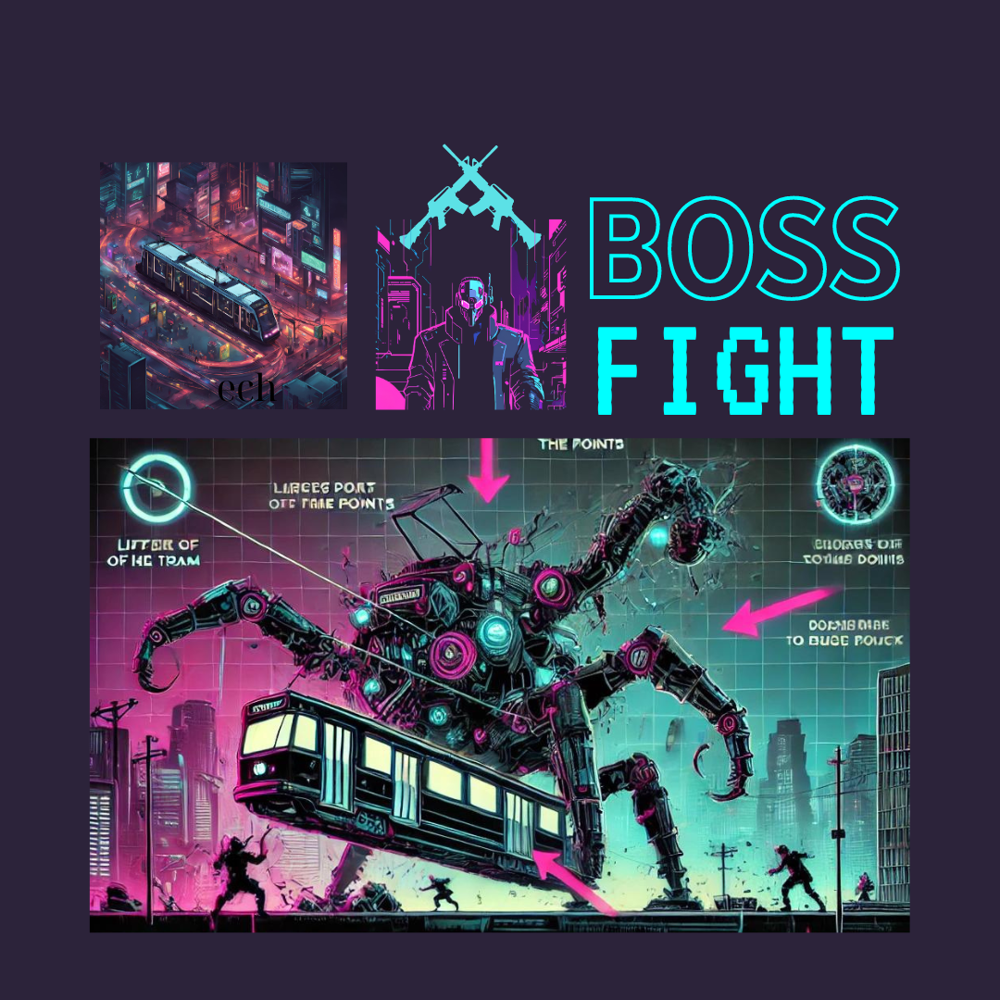
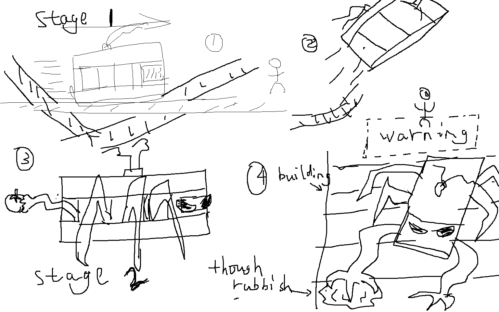

In a dystopian future, Melbourne is trapped in a decaying virtual reality known as the "Dark Grid". The city's University of Melbourne campus, once a beacon of knowledge, now lies in ruins, where the boundaries between the physical and digital worlds have blurred. The boundaries between the physical world and the Dark Grid—a twisted virtual reality—have blurred, creating a chaotic realm where nothing is as it seems. A digital virus, unleashed by the Sovereign, threatens to erase all existence. But hidden deep within the heart of chaos, Melbourne city, is the key to survival: the Source Code, an enigmatic piece of software capable of rebooting the system and restoring the balance between the two worlds. Time is running out, and the risks couldnt be higher. As players navigate around the underground levels of Melbourne's hectic infrastructure, they must confront the terrifying reality that each decision, each step, could be their last.
Reality-Virtual Interaction:

Melbourne is simultaneously caught between the crumbling physical world and the malevolent Dark Grid. Players must switch between these realms, where actions in one world have immediate, often significant consequences in the other. Solving mind-bending puzzles in the Dark Grid might unlock hidden passages in the real world, while manipulating objects in reality could reveal crucial, life-saving data within the virtual chaos.
Defeat enemies to unlock areas


Melbournes campus is a battleground, divided into sectors controlled by AI factions corrupted by the Sovereign's virus. To survive, players must hack into these network and gain control of the sectors from the AI's iron grip. Each reclaimed territory provides vital resources—data shards, enhanced abilities, and access to the deepest layers of the Dark Grid—all essential for locating the Source Code before it's too late.
Puzzle Solving and Survival:

The Source Code is encrypted within the campus, its location fragmented across data shards scattered throughout the Dark Grid. Players must decode these shards by solving intricate puzzles while avoiding digital anomalies that can corrupt their progress. Success stabilizes parts of the world, making them accessible, while failure accelerates the digital decay, locking down areas.
Enemies
 Tram Monster is a cyberpunk boss battle featuring a monstrous, sentient tram that terrorizes a dystopian city. The fight unfolds in two intense stages:
Stage 1
- There will be a lot of tram tracks on the map, and the boss can run on the ground tracks and crash to people, and you have to dodge.
Another variation of the trick is to lift up the track, then fly up, and then slam it down and smash people.
Then if the protagonist wants to attack, the tram may stop in the middle of the map, (like Overload) and the protagonist can take the opportunity to attack on its two sides. The tram also has a trick, which is that when it was attacked, it may fall to the left or right sides to hit the protagonist.
Stage 2
- When it reaches about 50%, or 30%hp, it enters the second stage, and a lot of big black claws stretch out from the windows or doors of the tram, like spiders. In this stage, a new long-range attack will be added, which is equivalent to the passengers inside throwing garbage out crazily to attack the protagonist.
In the second stage, where it can interact with the buildings in the scene, allowing tram to climb up the building. At this time, the protagonist cannot hit him, and it becomes a complete dodging barrage game, with the tram throwing garbage and various large rocks, and the protagonist can only dodge around. (Waiting the tram go down)
In the end, you can also kill him according to the whole plot, and then he will take the building materials from the building, and then he will hollow out the building, and then the building will fall down and crush the boss to death,
or you can kill him by yourself, and use some long-range weapon such as Bow
The fight is a chaotic blend of high-speed evasion, tactical offense, and survival against an urban nightmare.